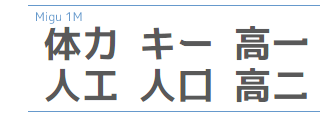
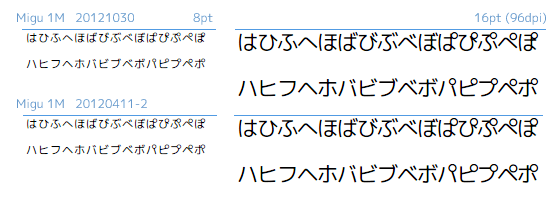
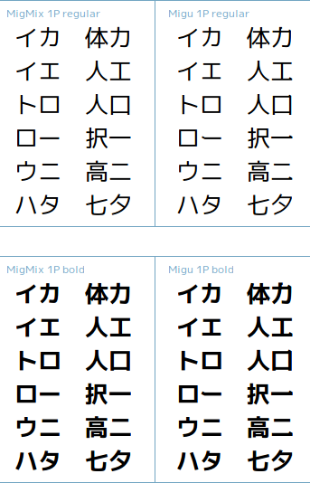
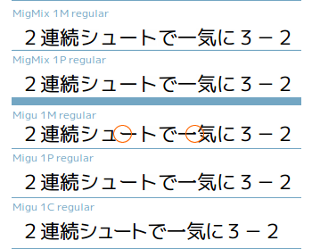
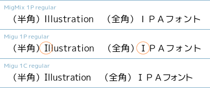

変更履歴
2023-11-23
- MigMix
- [MigMix 2P/2M] 半角 ｺ の幅を修正。詳細は Migu 2Mフォントの半角`ｺ`がおかしい を参照。
- Migu
- [Migu 2P/2M] 半角 ｺ の幅を修正。
- M+
- [Circle M+ 2p/2m] 半角 ｺ の幅を修正。
- [Clamp 2p/2m] 半角 ｺ の幅を修正。
2020-04-15
- M+
- [Clamp] ウェイトについて修正。前回の種類 w1, w2, w3, w4, w5 を W1, W3, W4, W5, W7 に変えた。[Wikipedia:フォント＞ウェイト (太字フォント・細字フォント)]に従い、もとのM+フォントのweight class数値（
100 Thin, 300 Light,..）と数値表記（W1, W3,..）を関連させた。
- [Clamp] ウェイトについて修正。前回の種類 w1, w2, w3, w4, w5 を W1, W3, W4, W5, W7 に変えた。[Wikipedia:フォント＞ウェイト (太字フォント・細字フォント)]に従い、もとのM+フォントのweight class数値（
2020-03-07
- MigMix
- M+ TESTFLIGHT 063aに同期。
- TrueTypeヒント情報を付与しないようにした。Windows環境のGoogleChromeやVisualStudioCodeで表示品質向上のため。
- Migu
- M+ TESTFLIGHT 063aに同期。
- TrueTypeヒント情報を付与しないようにした。Windows環境のGoogleChromeやVisualStudioCodeで表示品質向上のため。
- M+
- [Circle M+] 7ウェイト提供するようにした。これまではRegular／Boldの2ウェイト提供だったが、Adobe製デザインアプリ（Photoshop, Illustrator等）で7ウェイト選択できるようにした。 ※等幅フォントは5ウェイト。
- [Clamp] 新規追加。Circle M+と基本同じものだが、Windows環境やプレゼンアプリでも使いやすくするためにフォント名とウェイトの扱いを変えた。2ウェイト（標準／太字）×5種類（w1, w2, w3, w4, w5）あるため、極細体や極太体を使いやすくなる。 ※等幅フォントはw1, w2, w3の3種類。
| OS | ArchLinux |
|---|---|
| ソフト | FontForge 20141230 ＋ 日本語縦書きパッチ |
| ソース | M+アウトラインフォント M+ TESTFLIGHT 063a IPAゴシック Ver.003.03 |
2015-07-12
- MigMix
- M+ TESTFLIGHT 060に同期。
- FontForge日本語パッチ版とM+のスクリプト改善により、縦書き改善。
- スクリプトを置き換え。縦書きのために、フォントの合成方法を変更し、peスクリプトからpythonスクリプトに置き換え。
- Migu
- M+ TESTFLIGHT 060に同期。
- FontForge日本語パッチ版とM+のスクリプト改善により、縦書き改善。
- [Migu 1P/1C/1M] 波ダッシュ（U+301C 〜）と全角チルダ（U+FF5E ～）の字形を変更。U+301CはM+の字形に戻し、U+FF5Eは新規作成。詳細は「U+FF5E「～」と U+301C「〜」等の区別について」を参照。

- [Migu 1P/1C/1M] カタカナ「ヘベペ」の字形を変更。詳細はひらがな「へ」、カタカナ「ヘ」の区別についてを参照。
- [Migu 1P/1C/1M] 「ぱぴぷぺぽ パピプペポ」の半濁点を、Regularは少し大きくした。これまでオリジナルの130％だったが135％にした。Boldはこれまでどおり130％。
- [Migu 1M/2M] EMダッシュ（U+2014 —）を半角幅から全角幅に変更。詳細は「Migu1Mで「—」「−」が半角になる」を参照。
- [Migu 1M/2M] EMダッシュ（U+2014 —）とHORIZONTAL BAR（U+2015 ―）の縦書きを修正。詳細は「HORIZONTAL BAR ― の縦書き」を参照。
- [Migu 1P/1C] 引用符 U+2018 ‘ U+2019 ’ U+201C “ U+201D ” の字形を変更。詳細は「Migu 1C の引用符を Migu 1M と同じように」を参照。
- [Migu 1P/1C] 半角アルファベットの大文字アイ I の字形を多少細め（小文字エルと同じ太さ）に修正。
- [Migu 1C] 半角アルファベットの小文字エル l の字形を修正。より直立感。
- [Migu 1VS] 半角アルファベットの小文字エル l は横棒を外し、元の一直線の棒に戻した。
- [Migu 2DS] 波ダッシュ（U+301C 〜）と全角チルダ（U+FF5E ～）を同じ字形にした。
- スクリプトを一部置き換え。FontForgeに用意された合成機能（MergeFonts）を使うと縦書きがうまくいかないので、フォントの合成方法を変更し、peスクリプトからpythonスクリプトに置き換え。
- スクリプトを修正。JIS2004字形採用をよりシンプルな方法に変更。
| OS | ArchLinux, Windows 7 |
|---|---|
| ソフト | FontForge 20141230 ＋ 日本語縦書きパッチ Adobe Illustrator CS6 |
| ソース | M+アウトラインフォント M+ TESTFLIGHT 060 IPAゴシック Ver.003.03 |
2013-06-17
- MigMix
- M+ TESTFLIGHT 056（2013-06-17T12:30+09:00のCVS repository）に同期。
- IPAゴシックの「￣」の字形(U+FFE3)を修正。詳細はmixfont-mplus-ipaフォーラム：Migu 1Mで「￣￣￣￣￣￣」が空白になるを参照。
- mixfont-mplus-ipaフォーラム：U+02E9 と U+02E5 の合字についてに対応。
- Migu
- M+ TESTFLIGHT 056（2013-06-17T12:30+09:00のCVS repository）に同期。
- IPAゴシックの「￣」の字形(U+FFE3)を修正。詳細はmixfont-mplus-ipaフォーラム：Migu 1Mで「￣￣￣￣￣￣」が空白になるを参照。
- mixfont-mplus-ipaフォーラム：U+02E9 と U+02E5 の合字についてに対応。
- 「MacOS XのWord2008/2011」は再現できる環境を持たないため未確認。
| OS | Debian 6, Windows 7 |
|---|---|
| ソフト | FontForge 0.0.20100501-5 |
| ソース | M+アウトラインフォント M+ TESTFLIGHT 056 IPAゴシック Ver.003.03 |
2013-05-07
- Migu
- [Migu 1C] 半角アルファベットの小文字エル l のside bearingを修正。
2013-04-30
- MigMix
- M+ TESTFLIGHT 055に同期。IPAゴシックは変更なし。
- Migu
- M+ TESTFLIGHT 055（2013-04-30T08:10+09:00のCVS repository）に同期。IPAゴシックは変更なし。
- JIS2004（日本の文字規格 JIS X 0213:2004）の漢字字形に準拠した。'jp90'タグによるJP90字形への置き換えに対応。IVSによる字形置き換えには非対応。検証HTML: 20130430jp04jp90.html
- 「カ力 エ工 ロ口 ー一 ニ二」の、カタカナではなくて、漢字の字形を修正。以前は明朝体のような処理をしていたが、ゴシック体に合う角ばった処理にした。
 - [Migu 1C] 半角アルファベットの小文字エル l の横棒の形を修正。以前はMigu 1Mの小文字エルの部分をそのまま持ってきていたが横に長いので、横棒を短くした。
- [Migu 1VS] 半角アルファベットの小文字エル l に横棒をつけて数字1や大文字Iと判別しやすくした。
- [Migu 1BT] 新規追加。欧文フォントBitterとMigu 1Cを合成。Bitterの字形の変更点：半角ゼロ 0 に斜めスラッシュを追加。小文字エル l の左下端の横棒を削除。ハイフンマイナス - の横の長さを微妙に伸ばす。チルダ ~ の上下振幅を激しくする。コロン : とセミコロン ; の文字前後のスペース（Side Bearing）を空ける。
- 報告されている問題
- 「MacOS XのWord2008/2011」は再現できる環境を持たないため未確認。
| OS | Debian 6, Windows 7 |
|---|---|
| ソフト | FontForge 0.0.20100501-5 Adobe Illustrator CS4/CS5 |
| ソース | M+アウトラインフォント TESTFLIGHT 055 IPAゴシック Ver.003.03 |
2012-10-30
- MigMix
- M+ TESTFLIGHT 052に同期。IPAゴシックは変更なし。
- グリフ '.notdef' はこれまで存在したが、削除した。Windows7のＭＳ ゴシックとメイリオが notdef のglyphを持っていなかったので同じにした。
- フォントのバージョンをこれまでの
0.20121031形式から2012.1031形式に変更した。理由は「バージョン文字列は"Version <65535未満の数字>.<65535未満の数字>"形式」と決まっていたため。 - スクリプトの構造を変更。M+ TESTFLIGHTとして公開されているttfファイルと合成するようにした。→svgファイルを扱わずに済むので生成が簡単になった。
- Migu
- M+ TESTFLIGHT 052（2012-10-30のCVS repository）に同期。IPAゴシックは変更なし。
- 半濁点（全角ひらがな・全角カタカナ・半角カタカナ）をこれまでより若干小さくした。これまではMigMixの約140％の大きさだったが130％にした。
 - 半角カタカナの、濁点を少し小さくする。長音（音引き ー）の形も修正。
- 漢字の「三」「夕」の文字をM+オリジナルに戻した。
- [Migu 1C] 半角・全角のゼロ 0０ にスラッシュを入れて大文字Oと判別しやすくした。半角アルファベットの小文字エル l に横棒をつけて数字1や大文字Iと判別しやすくした。半角小文字エル、大文字アイ以外のbearings,kernings情報をオリジナルのM+ 1cと同じに戻した。
- [Migu 2M] WAVE DASH(U+301C)の字形をFULLWIDTH TILDE(U+FF5E)と同じにした。「U+FF5E「～」と U+301C「～」等の区別について」の要望に対応。
- [Migu 1P/1C] M+ 1p/1cの矢印記号のうちの2つ ↓↑ は全角より狭い横幅に最近変更されたが、Migu 1P/1Cでは全角にしている。
- フォントのバージョンをこれまでの
0.20121031形式から2012.1031形式に変更した。理由は「バージョン文字列は"Version <65535未満の数字>.<65535未満の数字>"形式」と決まっていたため。 - スクリプトの構造を変更。M+ Fontsプロジェクトのスクリプト変更に追従し、一部をpythonスクリプトに書き換え。生成途中にできる「IPA合成前のファイル」をsfdからttf形式に変更してフォント名も変更。Migu 1VS/2DSを合成しやすく変更。
- M+
- Miguフォント生成中に一時的に作る、IPAフォント合成前の加工済みM+フォントを、Circle M+という名前で配布することにした。デザインはMiguフォントと同じだが、IPAフォント合成前なので漢字がたりない。しかしIPAライセンスが混ざらないので、扱いが より自由に。
- 報告されている問題
- 「MacOS XのWord2008/2011」は再現できる環境を持たないため未確認。
| OS | Debian 6, Windows 7/8/XP |
|---|---|
| ソフト | FontForge 0.0.20100501-5 Adobe Illustrator CS4 |
| ソース | M+アウトラインフォント TESTFLIGHT 052 IPAゴシック Ver.003.03 |
2012-06-07 (Version 2012-04-11-2)
- MigMix
- ライセンスを変更。これまでIPAとM+のデュアルライセンスとしてきたが、IPAからの提言に従い、IPA単独ライセンスに変更。ttfファイルは 20120411 と同じで、README.txtとライセンスを書いたテキストファイルのみの変更。
- Migu
- ライセンスを変更。これまでIPAとM+のデュアルライセンスとしてきたが、IPAからの提言に従い、IPA単独ライセンスに変更。ttfファイルは 20120411 と同じで、README.txtとライセンスを書いたテキストファイルのみの変更。
- [Migu 1VS/2DS] ttf配布を停止した。これまでIPAとM+とDejaVu fonts／Droid fontsライセンスのトリプルライセンスとしてきたが、DejaVu fonts／Droid fontsライセンスはIPAライセンスと競合し、IPA単独ライセンスに変更できないため。
2012-04-11
- MigMix
- M+ TESTFLIGHT 048に同期。IPAゴシックは変更なし。
- 半角カタカナの形を変更。これまではIPAゴシックのグリフだったが、M+ fontsのグリフに変わった。
- 仕様変更：これまでは「縦書き対応」としていたが、「縦書き対応は等幅フォントに限る」と変更する。「一部アプリで縦書き非対応」の対策。
- グリフ U+200B(ZERO WIDTH SPACE)、U+2060(WORD JOINER)、U+FEFF(ZERO WIDTH NO-BREAK SPACE ＆ Byte Order Mark)はこれまで存在しなかったが、幅0のglyphとして存在させる。Androidフォントとして使用時などに豆腐文字を表示させないための対策。
- Migu
- M+ TESTFLIGHT 048に同期。IPAゴシックは変更なし。
- 半角カタカナの形を変更。これまではIPAゴシックのグリフだったが、M+ fontsのグリフに変わった。
- 仕様変更：これまでは「縦書き対応」としていたが、「縦書き対応は等幅フォントに限る」と変更する。「一部アプリで縦書き非対応」の対策。
- グリフ U+200B(ZERO WIDTH SPACE)、U+2060(WORD JOINER)、U+FEFF(ZERO WIDTH NO-BREAK SPACE ＆ Byte Order Mark)はこれまで存在しなかったが、幅0のglyphとして存在させる。Androidフォントとして使用時などに豆腐文字を表示させないための対策。
- グリフ '.notdef' はこれまで存在したが、削除してみた。Windows7のＭＳ ゴシックとメイリオが notdef のglyphを持っていなかったので同じにしてみた。
- 一部記号の文字幅を変更。「U+FF5E ～ と U+301C ～等の区別について」に対応。ＭＳ ゴシックとほぼ同じ仕様。
- 半角カタカナの、半濁点・濁点を大きく（MigMixの140％）する。音引き（ー）の左端を少し斜めに上げる。
- [Migu 2DS] 全角ひらがな／カタカナの文字間隔を少し狭く（前回までの80％）する。
- 報告されている問題
- 「MacOS XのWord2008/2011」は再現できる環境を持たないため未確認。
| OS | Ubuntu 10.04 / Windows XP / Windows 7 |
|---|---|
| ソフト | FontForge 0.0.20090923-2 Adobe Illustrator CS5 |
| ソース | M+アウトラインフォント TESTFLIGHT 048 IPAゴシック Ver.003.03 Droid Sans Regular:Version 1.00 build 114, Bold:Version 1.00 build 113 DejaVu Sans Condensed Version 2.33 |
2011-10-02
- MigMix
- M+ TESTFLIGHT 043に同期。IPAゴシックは変更なし。
- 不具合「Windows7でMigMix/Miguフォントを削除できない」を修正。以前のフォントを入れて削除できないときは、今回のバージョンのフォントを上書きインストールすれば削除できるようになる。
- 不具合「一部の文字の文字幅がおかしい」を修正。
- ウェイト（太さ）の名前がすこし変化した。「MigMix 1P regular」だったのが「MigMix 1P Regular」というようにウェイトの1文字めが大文字になった。
- フォントファイル名がすこし変化した。 MigMix-1P-regular.ttf だったのが migmix-1p-regular.ttf というようにすべて小文字になった。Windowsでは問題なく上書きされる。Linuxでは、前のバージョンを上書きしないので、前のバージョンのフォントをすべて削除してからインストールしたほうがよい。
- TTF名の言語フィールドを少し変更。
- Migu
- M+ TESTFLIGHT 043に同期。IPAゴシックは変更なし。
- 不具合「Windows7でMigMix/Miguフォントを削除できない」を修正。以前のフォントを入れて削除できないときは、今回のバージョンのフォントを上書きインストールすれば削除できるようになる。
- 不具合「一部の文字の文字幅がおかしい」を修正。
- [Migu 1M/2M] 不具合「全角オーバーライン「￣」(U+FFE3)は12pt以下で見えなくなることがある」を修正。
- 変更「U+FF5E ～ と U+301C ～等の区別について」に一部対応。 U+301Cの波形を逆向きにした。ほかの文字は検討中。
- ウェイト（太さ）の名前がすこし変化した。「Migu 1P regular」だったのが「Migu 1P Regular」というようにウェイトの1文字めが大文字になった。
- フォントファイル名がすこし変化した。 Migu-1P-regular.ttf だったのが migu-1p-regular.ttf というようにすべて小文字になった。Windowsでは問題なく上書きされる。Linuxでは、前のバージョンを上書きしないので、前のバージョンのフォントをすべて削除してからインストールしたほうがよい。
- TTF名の言語フィールドを少し変更。
- [Migu 1P/1C/1M/1VS/2M/2DS] 判別しにくい文字「タ夕」のうちカタカナではないほう（漢字）の字形を一部変更した。
- 報告されている問題
- 「MacOS XのWord2008/2011」は再現できる環境を持たないため未確認。
- 「一部アプリで縦書き非対応」の再現を確認。→仕様を変更して「等幅フォントに限り縦書き対応」とする。
| OS | Ubuntu 11.04 / Debian Unstable / Windows XP / Windows 7 |
|---|---|
| ソフト | FontForge 0.0.20100501-5ubuntu2 / 0.0.20110222-1 Adobe Illustrator CS4 |
| ソース | M+アウトラインフォント TESTFLIGHT 043 (2011-10-02 11:00JSTまでの修正も含む) IPAゴシック Ver.003.03 Droid Sans Regular:Version 1.00 build 114, Bold:Version 1.00 build 113 DejaVu Sans Condensed Version 2.33 |
2011-08-25
- MigMix
- M+ TESTFLIGHT 042に同期。IPAゴシックは変更なし。
- TTF名の言語フィールドに日本語を追加した。
- Migu
- M+ TESTFLIGHT 042に同期。IPAゴシックは変更なし。
- TTF名の言語フィールドに日本語を追加した。
- [Migu 1P/1C/1M/1VS/2M/2DS] 判別しにくい文字「カ力 エ工 ロ口 ー一 ニ二 タ夕」のうちカタカナではないほう（漢字）の字形を一部変更した。ついでに漢数字の「三」も変更した。
 - [Migu 1VS] 判別しにくい文字「ヘへ ベべ ペぺ」のうちカタカナではないほう（ひらがな）の字形は、今回はM+と同じ字形に戻した。
- [Migu 1VS] 不具合「Windowsでは 'はひふへほ' の文字が表示サイズによっては欠落することがある」を修正。
- 報告されている問題
- 「win7でMigMix 1Pの削除が出来ない」の再現性は未確認。解決策として「TTF名の言語フィールドに日本語を追加」をためしに入れたが、
修正されたかは未確認。→未解決。 - 「MacOS Xのword2008にて」は再現できる環境を持たないため未確認。解決策として「TTF名の言語フィールドに日本語を追加」をためしに入れたが、修正されたかは未確認。
- 「win7でMigMix 1Pの削除が出来ない」の再現性は未確認。解決策として「TTF名の言語フィールドに日本語を追加」をためしに入れたが、
| OS | Ubuntu 11.04 / Windows XP |
|---|---|
| ソフト | FontForge 0.0.20100501-5ubuntu2 Adobe Illustrator CS4 |
| ソース | M+アウトラインフォント TESTFLIGHT 042 IPAゴシック Ver.003.03 Droid Sans Regular:Version 1.00 build 114, Bold:Version 1.00 build 113 DejaVu Sans Condensed Version 2.33 |
2011-06-10
- MigMix
- M+ TESTFLIGHT 040に同期。IPAゴシックは変更なし。
- Migu
- M+ TESTFLIGHT 040に同期。IPAゴシックは変更なし。
- [Migu 1M/1VS] 全角英数字のゼロ「０」にスラッシュをつけた。つけたのは半角英数字にもスラッシュのある Migu 1M/1VSのみ。
- [Migu 1C] 半角英数字の文字幅を修正。M+1cの文字幅修正は、前回Migu 1C文字幅を修正しているので意図的に取り入れていない。
- [Migu 1C/2DS] 全角ひらがなカタカナの文字幅を修正。
- [Migu 2M] 新規作成。
- [Migu 1VS] 新規作成。
- [Migu 1VS] Migu 1Cを元に、半角英数字を DejaVu Sans Condensed に置き換え。
- [Migu 1VS] DejaVu Sans Condensedの「I」（大文字のアイ）の文字を小文字のエルと判別しやすいように横棒をつけた。
- [Migu 1VS] DejaVu Sans Condensedの「J」の文字を小文字の「j」と判別しやすいように横棒をつけた。
- [Migu 1VS] DejaVu Sans Condensedの「0」（数字のゼロ）の文字を大文字のオーと判別しやすいように斜め線をつけた。
- [Migu 1VS] 判別しにくい文字「カ力 エ工 ロ口 ー一 ニ二 タ夕 ヘへ ベべ ペぺ」のうちカタカナではないほうの字形を一部変更した。今回は Migu 1VSのみに試験的に先行導入した。Migu 1P/1C/1M/2M/2DSには次回導入予定。
- 報告されている問題
- 「Migu 1VSでの欠落」は不具合を確認しました。 次回修正予定。
- 「MacOSXでMigu 1VSの不具合報告」は再現できる環境を持たないため未確認です。おそらく一つ上の不具合を修正すれば同時に直るはず。
- 「win7でMigMix 1Pの削除が出来ない」は未確認です。
- 「MacOS Xのword2008にて」は再現できる環境を持たないため未確認です。
| OS | Ubuntu 11.04 / Windows XP |
|---|---|
| ソフト | FontForge 0.0.20100501-5ubuntu2 Adobe Illustrator CS4 |
| ソース | M+アウトラインフォント TESTFLIGHT 040 IPAゴシック Ver.003.03 Droid Sans Regular:Version 1.00 build 114, Bold:Version 1.00 build 113 DejaVu Sans Condensed Version 2.33 |
2011-05-14
- MigMix
- M+ TESTFLIGHT 039に同期。
- IPAゴシック Ver.003.03に更新。
- Migu
- M+ TESTFLIGHT 039に同期。
- IPAゴシック Ver.003.03に更新。
- [Migu 1M/1P/1C] 「一(漢数字) ー(長音記号) －(マイナス) の区別」のため、漢数字と長音記号の字形を変更した。縦書きにも対応。
 - [Migu 1P] 全角ひらがな・カタカナを、可変幅から等幅に変更した。
- [Migu 1P/1C] 「 I (英大文字のアイ）」の字形と文字幅を変更。M+では単なる縦線だが、横棒つきにして、前回より横棒を大きくした。
 - [Migu 1C] 半角英数字の文字幅を変更した。英文サイトを読みやすくするため、すきまを詰める方針で修正。